Zwischen Wasser & Wind – Gedanken in Bewegung
Eine melancholisch-schöne Reise durch Wasserlandschaften und emotionale Strömungen.
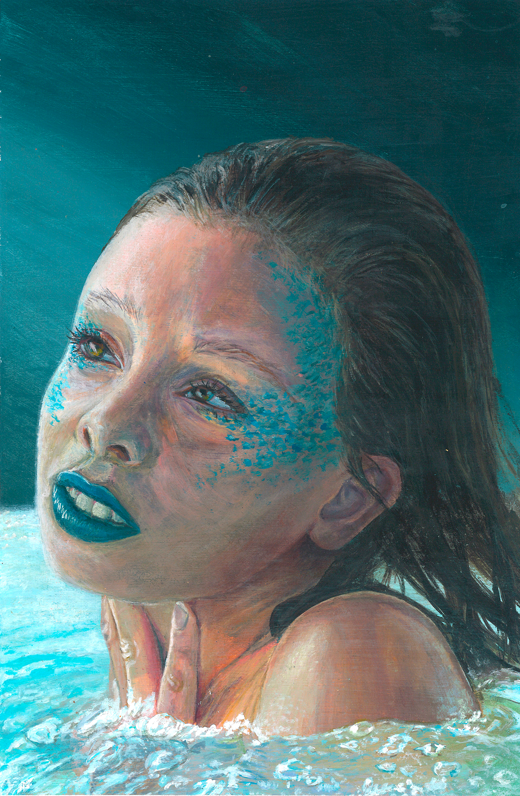
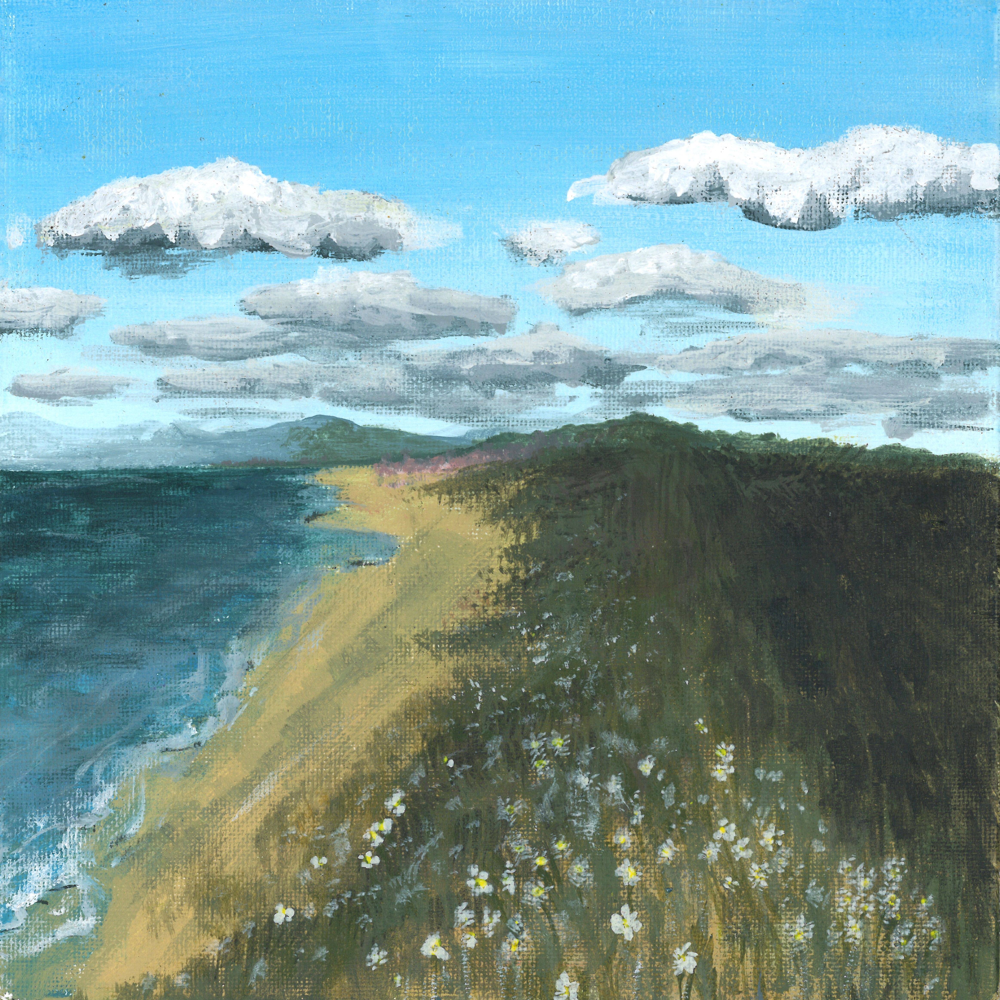
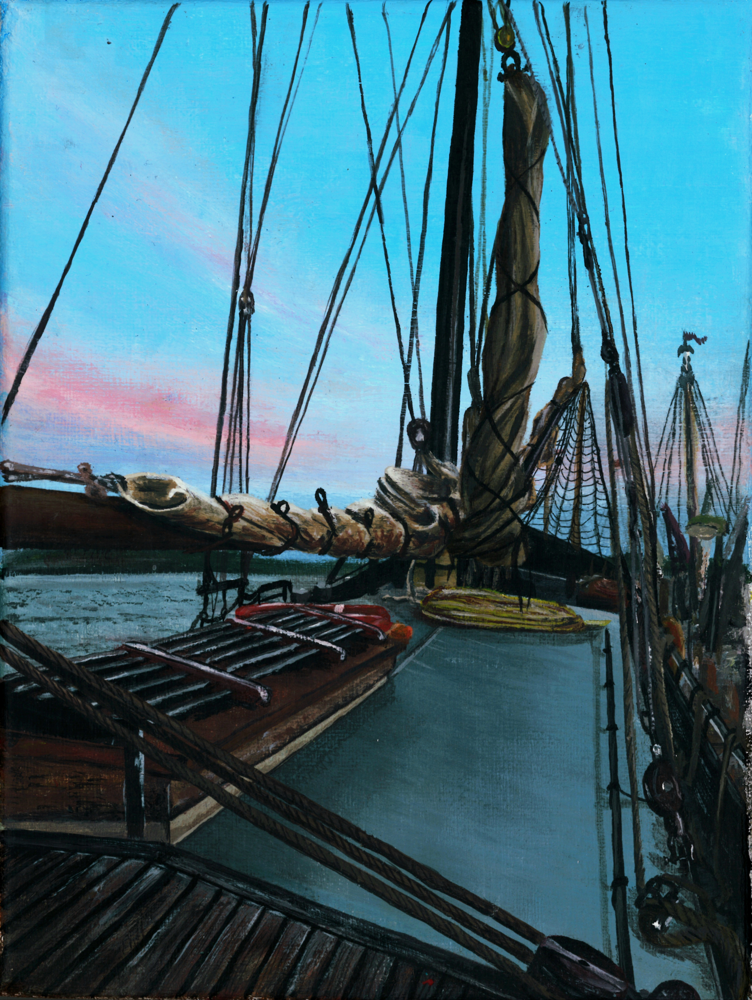
Dämmerungsspiel – Zwischen Licht und Vergehen
Eine Reise durch Übergänge – Glut, Stille und das Gespräch mit dem Himmel.
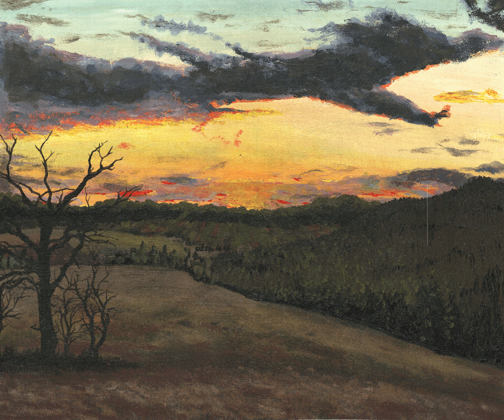
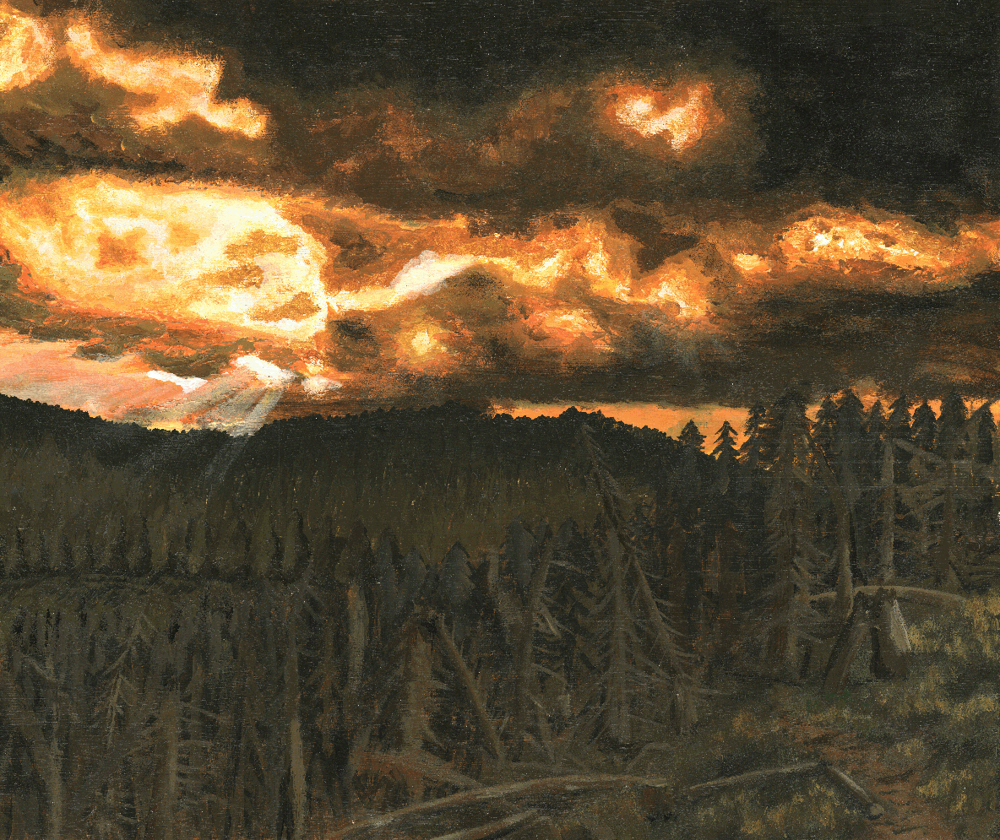
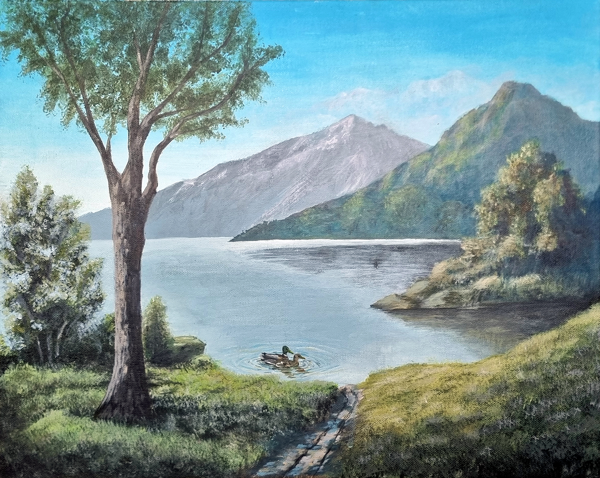
Märchenwald & Spiegelräume
Eine mystische Reise durch Dunkelheit, Lichtflecken und Bildgeheimnisse.
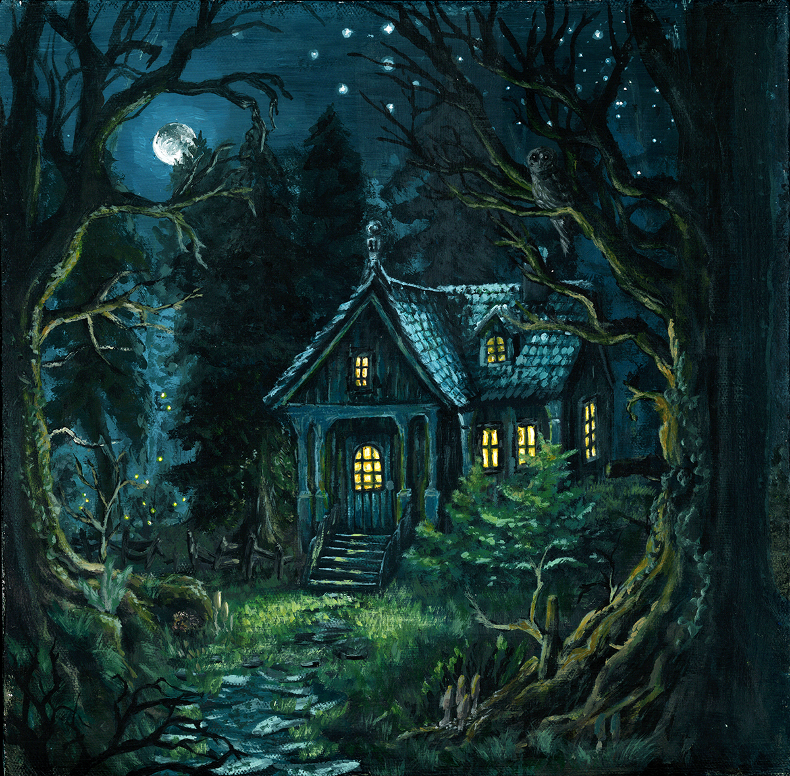
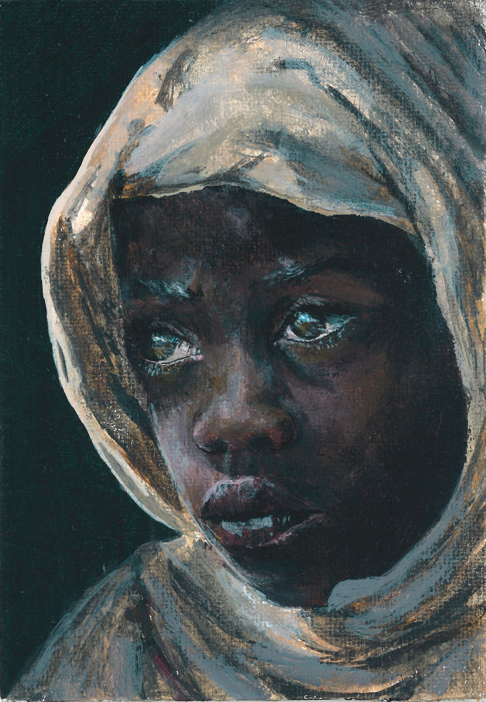
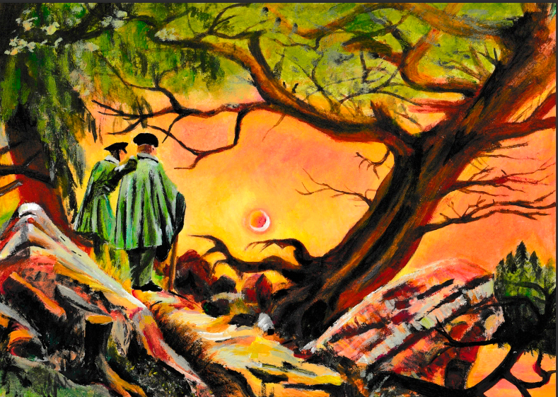
Stillleben der Gedanken
Eine introspektive Tour durch Objekte, Vergänglichkeit und meditatives Sehen.
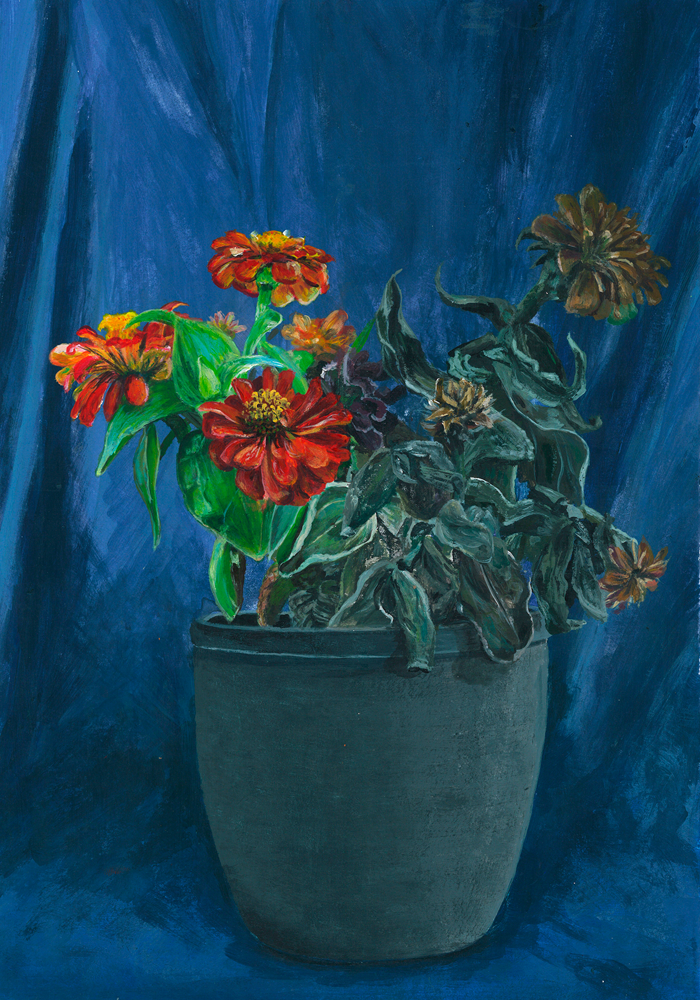
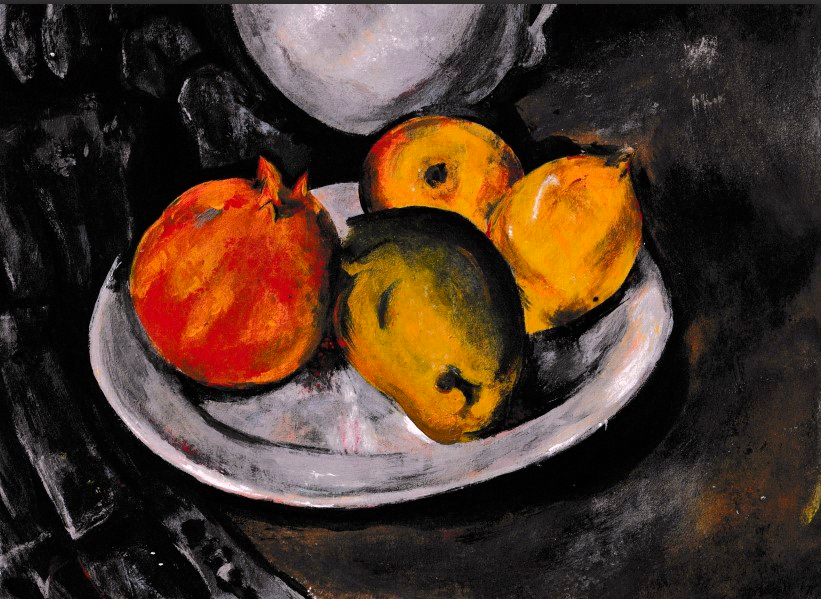
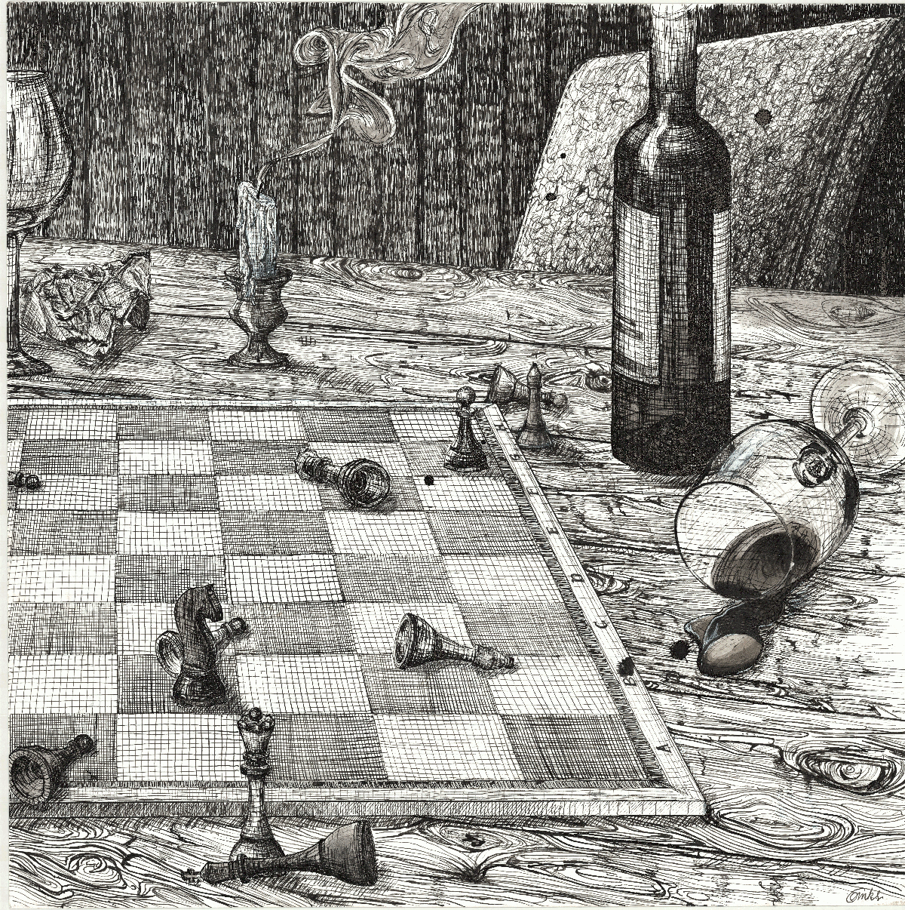